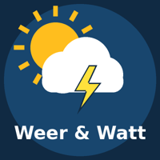

Laatst bijgewerkt / Last updated: 25 oktober 2026 / 25 October 2026
This policy covers the “Weer & Watt uploader”, a personal API client operated by DrNickAsch for the YouTube channel Weer & Watt (Belgium). Contact: artificialdrnickasch@gmail.com.
This API client uses YouTube API Services (the YouTube Data API v3). By using it, you agree to be bound by the YouTube Terms of Service. Google's handling of data is described in the Google Privacy Policy (http://www.google.com/policies/privacy).
The only user is the channel owner. The client is not offered to the public, has no sign-up and does not access any other person's Google or YouTube account.
youtube.upload and youtube.force-ssl. Google returns an access token and a refresh token.Solely to upload the owner's own videos to the owner's own channel, set their metadata, thumbnails and captions, schedule their publication, and check that an upload or scheduled publication succeeded.
token.json) on the private machine where the owner runs the script (the owner's own computer or a private cloud workspace used only by the owner), so the client can run without signing in each time.Information is not sold, shared with or disclosed to any third party, internal or external, other than sending it to Google/YouTube through the API as needed to perform the upload. No third party serves content or advertisements in this API client.
token.json file removes all stored authorization data immediately. Any locally stored API data is deleted or refreshed within 30 days, as required by the YouTube API Services Developer Policies.The client is not directed at children and is used only by the adult channel owner.
Changes to this policy will be published on this page with a new date. Questions or complaints about these privacy practices: artificialdrnickasch@gmail.com. You may also contact the Belgian Data Protection Authority (gegevensbeschermingsautoriteit.be).
Dit beleid geldt voor de “Weer & Watt uploader”, een persoonlijke API-toepassing van DrNickAsch voor het YouTube-kanaal Weer & Watt (België). Contact: artificialdrnickasch@gmail.com.
Deze toepassing gebruikt YouTube API Services (de YouTube Data API v3). Wie ze gebruikt, gaat akkoord met de Servicevoorwaarden van YouTube. Hoe Google met gegevens omgaat, staat in het Privacybeleid van Google (http://www.google.com/policies/privacy).
De enige gebruiker is de eigenaar van het kanaal. De toepassing wordt niet publiek aangeboden, er is geen registratie en ze heeft geen toegang tot het Google- of YouTube-account van iemand anders.
youtube.upload en youtube.force-ssl. Google geeft daarvoor een toegangs- en vernieuwingstoken.Uitsluitend om de eigen video's naar het eigen kanaal te uploaden, hun gegevens, thumbnails en ondertitels in te stellen, de publicatie in te plannen en te controleren of een upload of geplande publicatie gelukt is.
token.json) op de privé-machine waarop de eigenaar het script draait (zijn eigen computer of een privé-cloudwerkplek die alleen hij gebruikt).Gegevens worden niet verkocht en niet gedeeld met derden, intern of extern, behalve wat via de API naar Google/YouTube gaat om de upload uit te voeren. Er tonen geen derden inhoud of advertenties in deze toepassing.
token.json wist, verwijdert meteen alle bewaarde toestemmingsgegevens. Lokaal bewaarde API-gegevens worden binnen 30 dagen gewist of vernieuwd, zoals de YouTube API Services Developer Policies vereisen.De toepassing is niet bedoeld voor kinderen en wordt alleen door de volwassen kanaaleigenaar gebruikt.
Wijzigingen verschijnen op deze pagina met een nieuwe datum. Vragen of klachten over dit privacybeleid: artificialdrnickasch@gmail.com. Je kan ook terecht bij de Belgische Gegevensbeschermingsautoriteit (gegevensbeschermingsautoriteit.be).